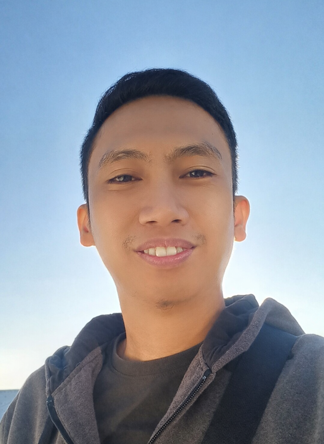

I am an aspiring Full Stack Web Developer with a strong passion for building modern, user‑friendly applications. I hold a degree in Computer Science and spent over a decade in the BPO industry as a Customer Service Representative, where I developed excellent communication and problem‑solving skills. I also worked as a Trainer for more than a year, helping new hires grow into confident and effective professionals.
Currently, I am focused on advancing my career in Web Development. I am actively learning HTML, CSS, and JavaScript, with the goal of becoming a proficient and versatile web developer capable of delivering high‑quality solutions.
rovysantia@gmail.com.
09959036618.